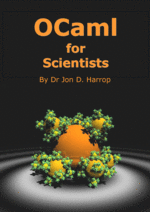
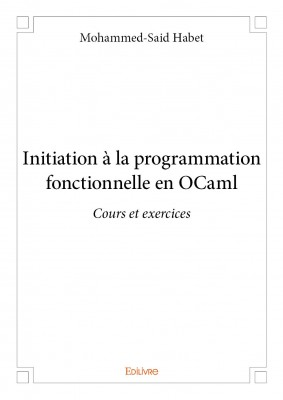
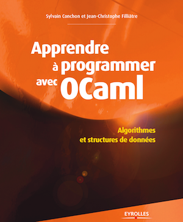

Books
Books in English
The OCaml System: Documentation and User's Manual

Damien Doligez, Alain Frisch, Jacques Garrigue, Didier Rémy, and Jérôme Vouillon
This the official User's Manual. It serves as a complete reference guide to OCaml. Updated for each version of OCaml, it contains the description of the language, of its extensions, and the documentation of the tools and libraries included in the official distribution.
Online | PDF | HTML Tarball | Older Versions
Real World OCaml

Jason Hickey, Anil Madhavapeddy, and Yaron Minsky. Published 25th November 2013
Learn how to solve day-to-day problems in data processing, numerical computation, system scripting, and database-driven web applications with the OCaml multi-paradigm programming language. This hands-on book shows you how to take advantage of OCaml’s functional, imperative, and object-oriented programming styles with recipes for many real-world tasks.
You’ll start with OCaml basics, including how to set up a development environment, and move toward more advanced topics such as the module system, foreign-function interface, macro language, and the ocamlbuild system. Quickly learn how to put OCaml to work for writing succinct and readable code.
Book Website | O'Reilly | Amazon
OCaml from the Very Beginning

John Whitington. Published June 7th, 2013
In "OCaml from the Very Beginning" John Whitington takes a no-prerequisites approach to teaching a modern general-purpose programming language. Each small, self-contained chapter introduces a new topic, building until the reader can write quite substantial programs. There are plenty of questions and, crucially, worked answers and hints.
"OCaml from the Very Beginning" will appeal both to new programmers, and experienced programmers eager to explore functional languages such as OCaml. It is suitable both for formal use within an undergraduate or graduate curriculum, and for the interested amateur.
More OCaml: Algorithms, Methods & Diversions

John Whitington. Published 26th August 2014
In "More OCaml" John Whitington takes a meandering tour of functional programming with OCaml, introducing various language features and describing some classic algorithms. The book ends with a large worked example dealing with the production of PDF files. There are questions for each chapter together with worked answers and hints.
"More OCaml" will appeal both to existing OCaml programmers who wish to brush up their skills, and to experienced programmers eager to explore functional languages such as OCaml. It is hoped that each reader will find something new, or see an old thing in a new light. For the more casual reader, or those who are used to a different functional language, a summary of basic OCaml is provided at the front of the book.
Unix System Programming in OCaml
Xavier Leroy and Didier Rémy. Published May 2010
This is an excellent book on Unix system programming, with an emphasis on communications between processes. The main novelty of this work is the use of OCaml, instead of the C language that is customary in systems programming. This gives an unusual perspective on systems programming and on OCaml. It is assumed that the reader is familiar with OCaml and Unix shell commands.
OCaml for Scientists

Jon D. Harrop
Flying Frog Consultancy Ltd, 2005.
This book teaches OCaml programming with special emphasis on scientific applications. Many examples are given, covering everything from simple numerical analysis to sophisticated real-time 3D visualisation using OpenGL. This book contains over 800 color syntax-highlighted source code examples and dozens of diagrams that elucidate the power of functional programming to explain how lightning-fast and yet remarkably-simple programs can be constructed in the OCaml programming language.
Book Website | Ordering Information
Using, Understanding, and Unraveling OCaml
Didier Rémy. Published 20th September 2002
This book describes both the OCaml language and the theoretical grounds behind its powerful type system. A good complement to other books on OCaml it is addressed to a wide audience of people interested in modern programming languages in general, ML-like languages in particular, or simply in OCaml, whether they are programmers or language designers, beginners or knowledgeable readers — little prerequisite is actually assumed.
Developing Applications With OCaml

Emmanuel Chailloux, Pascal Manoury, Bruno Pagano. Published 2002
A comprehensive (742 pages) book on OCaml, covering not only the core language, but also modules, objects and classes, threads and systems programming, interoperability with C, and runtime tools. This book is a translation of a French book published by OReilly.
Book Website | Online | PDF
Introduction to OCaml
Jason Hickey. Published in 2008
This book is notoriously much more than just an introduction to OCaml, it describes most of the language, and is accessible.
Abstract: This book is an introduction to ML programming, specifically for the OCaml programming language from INRIA. OCaml is a dialect of the ML family of languages, which derive from the Classic ML language designed by Robin Milner in 1975 for the LCF (Logic of Computable Functions) theorem prover.
The Functional Approach to Programming

Guy Cousineau, Michel Mauny
Cambridge University Press, Cambridge, 1998,
ISBN 0-521-57183-9 (hardcover) or 0-521-57681-4 (paperback)
This book uses OCaml as a tool to introduce several important programming concepts. It is divided in three parts. The first part is an introduction to OCaml, which presents the language itself, but also introduces evaluation by rewriting, evaluation strategies and proofs of programs by induction. The second part is dedicated to the description of application programs which belong to various fields and might interest various types of readers or students. Finally, the third part is dedicated to implementation. It describes interpretation and compilation, with brief descriptions of memory management and type synthesis.
Book Website | Order at Amazon.com
OCaml Book
Hongbo Zhang. Published 2011
This book is a work in progress. It currently includes sections on the core OCaml language, Camlp4, parsing, various libraries, the OCaml runtime, interoperating with C, and pearls.
Think OCaml: How to Think Like a (Functional) Programmer

Nicholas Monje and Allen Downey. Published 2008
This book is a work in progress. It is an introductory programming textbook based on the OCaml language. It is a modified version of Think Python by Allen Downey. It is intended for newcomers to programming and also those who know some programming but want to learn programming in the function-oriented paradigm, or those who simply want to learn OCaml.
Books in French
Initiation à la programmation fonctionnelle en OCaml

Mohammed-Said Habet
édition: Edilivre, 2015. ISBN: 9782332978400
La programmation fonctionnelle est un style de programmation qui consiste à considérer les programmes informatiques comme des fonctions au sens mathématique du terme. Ce style est proposé dans de nombreux langages de programmation anciens et récents comme OCaml.
Le but de ce livre est d’initier le lecteur au style fonctionnel de programmation en utilisant le langage OCaml. Cet ouvrage s’adresse donc principalement aux débutants en informatique. Il peut également être l’occasion pour les initiés de découvrir le langage de programmation OCaml.
Le lecteur trouvera une présentation progressive des concepts de programmation fonctionnelle dans le langage OCaml, illustrée par des exemples, de nombreux exercices corrigés et d’autres laissés à l’initiative du lecteur.
Apprendre à programmer avec OCaml

Jean-Christophe Filliâtre and Sylvain Conchon
Éditions Eyrolles, Paris, 2014, ISBN 2-21213-678-1.
Computer programming is hard to learn. Being a skillful programmer requires imagination, anticipation, knowledge in algorithmics, the mastery of a programming language, and above all experience, as difficulties are often hidden in details. This book synthesizes our experience as teachers and programmers.
The programming style is essential. Given a programming language, the same algorithm can be written in multiple ways, and some of them can be both elegant and efficient. This is what the programmer must seek at all costs and the reason why we choose a programming language for this book rather than pseudo-code. Our choice is OCaml.
This book is organized into three parts. The first one introduces OCaml and targets beginners, being they programming beginners or simply new to OCaml. Through small programs, the reader is introduced to fundamental concepts of programming and of OCaml. The second and third parts are dedicated to fundamental concepts of algorithmics and should allow the reader to write programs in a structured and efficient way. Algorithmic concepts are directly presented in the syntax of OCaml and any code snippet from the book is available online.
Développement d'applications avec Objective Caml

Emmanuel Chailloux, Pascal Manoury, and Bruno Pagano
Éditions O'Reilly, Paris, 2000, ISBN 2-84177-121-0.
A comprehensive (742 pages) book on OCaml, covering not only the core
language, but also modules, objects and classes, threads and systems
programming, and interoperability with C.
"Objective CAML est un langage de programmation : un de plus dira-t-on ! Ils sont en effet déjà nombreux et pourtant il en apparaît constamment de nouveaux. Au delà de leurs disparités, la conception et la genèse de chacun d'eux procèdent d'une motivation partagée : la volonté d'abstraire"
Manuel de référence du langage Caml

Xavier Leroy and Pierre Weis
InterEditions, Paris, 1993, ISBN 2-7296-0492-8 (out of print).
Written by two of the implementors of the Caml Light compiler, this
comprehensive book describes all constructs of the programming language
and provides a complete documentation for the Caml Light system.
Intro: "Cet ouvrage contient le manuel de référence du langage Caml et la documentation complète du système Caml Light, un environnement de programmation en Caml distribué́ee gratuitement. Il s’adresse á des programmeurs Caml exp ́ériment ́és, et non pas aux d ́ébutants. Il vient en compl ́ément du livre Le langage Caml, des mêmes auteurs chez le même é́editeur, qui fournit une introduction progressive au langage Caml et á l’é́ecriture de programmes dans ce langage."
Le langage Caml

Pierre Weis, Xavier Leroy
Second edition: Dunod, Paris, 1999, ISBN 2-10-004383-8.
First edition: InterEditions, Paris, 1993. Out of print.
This book is a comprehensive introduction to programming in OCaml. Usable as a programming course, it introduces progressively the language features and shows them at work on the fundamental programming problems. In addition to many introductory code samples, this book details the design and implementation of six complete, realistic programs in reputedly difficult application areas: compilation, type inference, automata, etc.
Approche fonctionnelle de la programmation

Guy Cousineau, Michel Mauny
Ediscience (Collection Informatique), Paris, 1995, ISBN 2-84074-114-8.
This book uses OCaml as a tool to introduce several important programming concepts. It is divided in three parts. The first part is an introduction to OCaml, which presents the language itself, but also introduces evaluation by rewriting, evaluation strategies and proofs of programs by induction. The second part is dedicated to the description of application programs which belong to various fields and might interest various types of readers or students. Finally, the third part is dedicated to implementation. It describes interpretation then compilation, with brief descriptions of memory management and type synthesis.
Seize problèmes d'informatique

Bruno Petazzoni
Éditions Springer, Paris, 2001
ISBN 3-540-67387-3.
This book offers sixteen problems in computer science, with detailed answers to all questions and complete solutions to algorithmic problems given as OCaml programs. It deals mainly with automata, finite or infinite words, formal language theory, and some classical algorithms such as bin-packing. It is intended for students who attend the optional computer science curriculum of the “classes préparatoires MPSI/MP”. It should also be useful to all teachers and computer science students up to a masters degree.
Nouveaux exercices d'algorithmique

Michel Quercia
Éditions Vuibert, Paris, 2000
ISBN 2-7117-8990 X.
This book presents 103 exercises and 5 problems about algorithms, for masters students. It attempts to address both practical and theoretical questions. Programs are written in OCaml and expressed in a purely functional style. Problem areas include programming methodology, lists, formula evaluation, Boolean logic, algorithmic complexity, trees, languages, and automata.
Option informatique MPSI

Denis Monasse
Éditions Vuibert (Enseignement supérieur & Informatique), Paris, 1996
ISBN 2-7117-8831-8.
This is a computer science course for the first year of “classes préparatoires”. The course begins with an introductory lesson on algorithms and a description of the OCaml language. Then, several fundamental algorithms are described and illustrated using OCaml programs. The book adopts a mathematical approach: descriptions of mathematical objects are related to data structures in the programming language. This book is suitable for students with some mathematical background, and for everyone who wants to learn the bases of computer science.
Option informatique MP/MP*

Denis Monasse
Éditions Vuibert (Enseignement supérieur & Informatique), Paris 1997
ISBN 2-7117-8839-3.
This books is a follow-up to the previous one and is intended for second year students in “classes préparatoires”. It deals with trees, algebraic expressions, automata and languages, and OCaml streams. The book contains more than 200 OCaml programs.
Cours et exercices d'informatique

Luc Albert
Thomson Publishing International, Paris, 1997
ISBN 2-84180-106-3.
This book was written by teachers at university and in “classes préparatoires”. It is intended for “classes préparatoires” students who study computer science and for students engaged in a computer science cursus up to the masters level. It includes a tutorial of the OCaml language, a course on algorithms, data structures, automata theory, and formal logic, as well as 135 exercises with solutions.
Concepts et outils de programmation

Thérèse Accart Hardin, Véronique Donzeau-Gouge Viguié
InterEditions, ISBN 2 7296 0419 7.
This book presents a new approach to teaching programming concepts to beginners, based on language semantics. A simplified semantic model is used to describe in a precise manner the features found in most programming languages. This model is powerful enough to explain typechecking, polymorphism, evaluation, side-effects, modularity, exceptions. Yet, it is simple enough to be manipulated by hand, so that students can actually use it to compute. The book begins with a functional approach, based on OCaml, and continues with a presentation of an imperative language, namely Ada. It also provides numerous exercises with solutions.
Programmation en Caml

Jacques Rouablé
Eyrolles, Paris 1997, ISBN 2-212-08944-9.
This book is intended for beginners, who will learn basic programming notions. The first part of the book is a programming course that initiates the reader to the OCaml language. Important notions are presented from a practical point of view, and the implementation of some of these is analyzed and sketched. The second part, the “OCaml workshop”, is a practical application of these notions to other domains connected to computer science, logic, automata and grammars.
Apprentissage de la programmation avec OCaml

Catherine Dubois and Valérie Ménissier Morain
Hermès Sciences, Paris 2004, ISBN 2-7462-0819-9.
Programming is a discipline by which the strengths of computers can be harnessed: large amounts of reliable memory, the ability to execute repetitive tasks relentlessly, and a high computation speed. In order to write correct programs that fulfill their specified needs, it is necessary to understand the precise semantics of the programming language. This book is targeted towards beginner programmers and provides teaching material for all programmers wishing to learn the functional programming style. The programming features introduced in this book are available in all dialects of the ML language, notably Caml-Light, OCaml and Standard ML. The concepts presented therein and illustrated in OCaml easily transpose to other programming languages.
Programmation fonctionnelle, générique et objet: une introduction avec le langage OCaml

Philippe Narbel
Vuibert, Paris 2005, ISBN 2-7117-4843-X.
Programmation de droite à gauche et vice-versa

Pascal Manoury
Éditions Paracamplus, Paris, 2011, ISBN 978-2-916466-05-7.
Books in German
Algorithmen, Datenstrukturen, Funktionale Programmierung: Eine praktische Einführung mit Caml Light

Juergen Wolff von Gudenberg
Addison-Wesley, Bonn, 1996.
This book gives an introduction to programming where algorithms as well as data structures are considered functionally. It is intended as an accompanying book for basic courses in computer science, but it is also suitable for self-studies. In the first part, algorithms are described in a concise and precise manner using Caml Light. The second part provides a tutorial introduction into the language Caml Light and in its last chapter a comprehensive description of the language kernel.
Books in Italian
Programmazione funzionale, una semplice introduzione
Massimo Maria Ghisalberti
Emacs Org source | HTML | PDF
Introduzione alla programmazione funzionale

Carla Limongelli and Marta Cialdea
Societa' Editrice Esculapio, 2002, ISBN 88-7488-031-6.
Books in Portuguese
OCaml: Programação Funcional na Prática

Andrei de Araújo Formiga
Casa do Código, 2015
This book is an introduction to functional programming through OCaml, with a pragmatic focus. The goal is to enable the reader to write real programs in OCaml and understand most of the open source code written in the language. It includes many code examples illustrating the topics and a few larger projects written in OCaml that showcase the integration of many language features. These larger programs include a set of interpreter, compiler and stack machine for a simple language, and a decision tree learning program for data analysis.